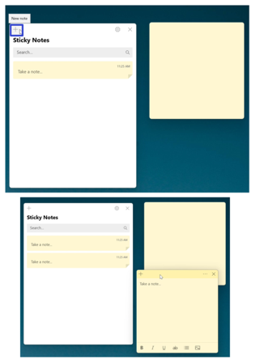
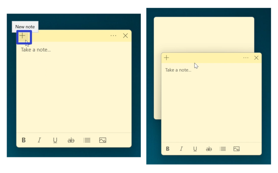
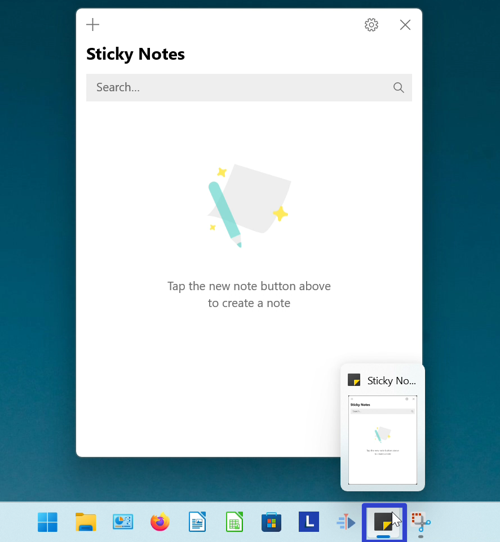
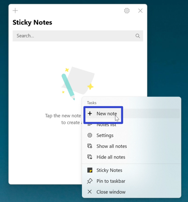
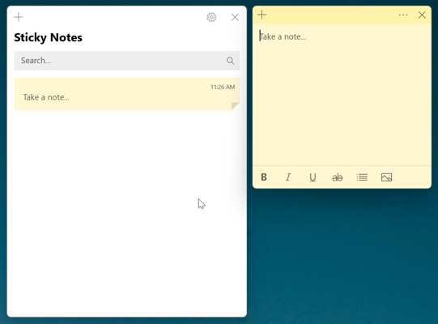
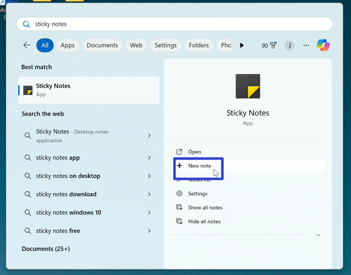
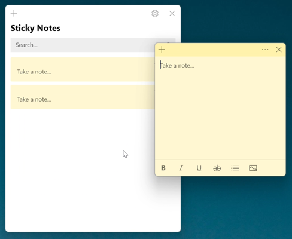
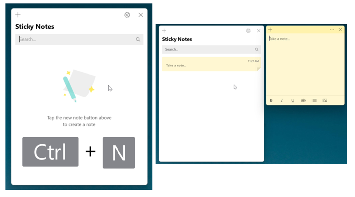
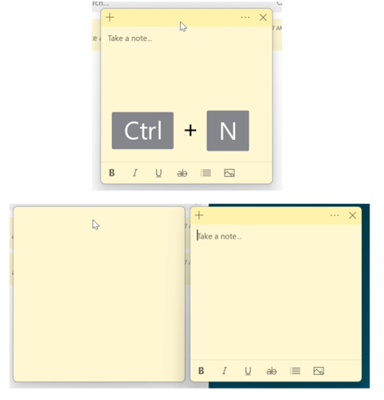

How to Create Sticky Notes in the Microsoft Sticky Notes App (Windows 11)
This tutorial covers:
How to Create a Sticky Note:
No time to scroll down? Click through this tutorial presentation:
Watch a video tutorial:
How to Create a Sticky Note With Click
- Method 1: First open the Notes List. Go to the upper left corner and click the “New note” or “+” button. A new sticky note appears. 
- Method 2: Open a sticky note. Go to the upper left corner and click the “New note” or “+” button. A new sticky note appears. 
How to Create a Sticky Note With Right Click
- Step 1: First open or pin the Sticky Notes app. Go down to the taskbar and right click the Sticky Notes app icon. 
- Step 2: In the menu that opens, click “+ New note”. 
- A new sticky note appears. 
How to Create a Sticky Note With Search
- Step 1: Go down to the taskbar and click the Start (four blue squares) button.

- Step 2: In the Start window that opens, click the top search bar and type “sticky notes”.

- Step 3: On the search results screen, click “+ New note”. 
- Step 4: A new sticky note appears. 
How to Create a Sticky Note With Keyboard Shortcut
- Method 1: First open the Notes List. Click the Notes List, and on the keyboard press Ctrl + N. A new sticky note appears. 
- Method 2: Open a sticky note. Click the sticky note and on the keyboard press Ctrl + N. A new sticky note appears. 
Refer to these instructions later with this free PDF tutorial.